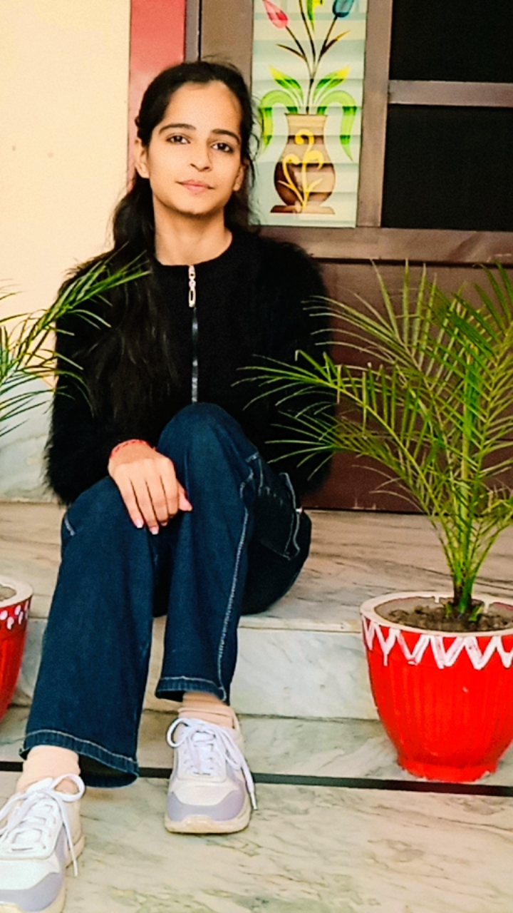

Contact : jeshikasharma7@gmail.com
Linkedin : linkedin.com/in/jeshika-sharma
Github : github.com/jeshika31
|  | As a first-year BTech Computer Science student at MM(DU), I am passionate about exploring the dynamic world of technology and software development. With a solid foundation in C++, I am eager to expand my knowledge and skills in areas such as algorithms, data structures, and software engineering. I am committed to applying my learning through hands-on projects and internships, aiming to contribute to innovative solutions and gain practical experience. My goal is to leverage my technical skills to tackle real-world challenges and continuously grow in the field of computer science. I am excited about connecting with professionals and peers who share my interests and look forward to opportunities that will allow me to learn, contribute, and make a meaningful impact in the tech industry. |
library Management Application - Created a dekstop application using Python.
Hosted link : github.com/jeshika31
DMC Generator - Created a dekstop application that generated 10th class DMC by taking marks as input.
Hosted link : github.com/jeshika31
Account Management system - Created a dekstop application that check balance , deposit and withdraw money form account.
Hosted link : github.com/jeshika31